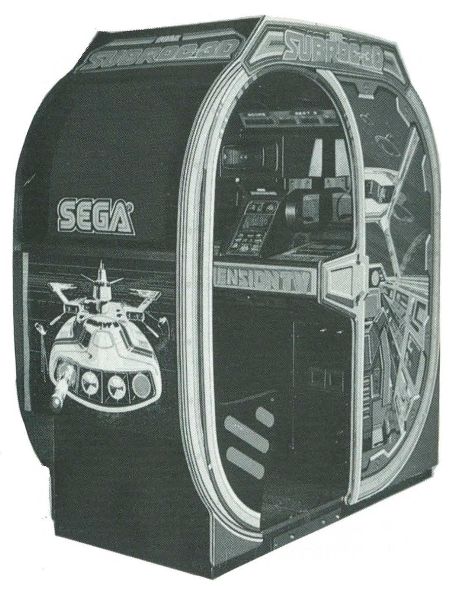

Sega SubRoc-3D
The arcade cabinet you pressed your face into — first stereoscopic 3D video game with a mechanical spinning-shutter periscope.

Overview
SubRoc-3D was the first commercial stereoscopic 3D video game, released by Sega in Japanese arcades in March 1982 and North America in August 1982. The cabinet featured a submarine-periscope-shaped viewer containing a mechanical active-shutter system jointly developed with Matsushita Electric (Panasonic): two spinning disks, each painted half opaque and half transparent, synchronized with the CRT display's alternating left-eye and right-eye images. The player pressed their face against the periscope eyepiece and gripped controls below, aiming at enemies with their whole upper body. The game's 3D effect was rendered at 30 frames per second on Sega's VCO Object hardware — the same sprite-scaling board used by Turbo (1981). The ColecoVision home port (October 1983) removed the 3D entirely, making the arcade original the only way to experience the full interaction. At least four publicly playable cabinets survive today.
Deep dive
SubRoc-3D was conceived by Shikanosuke Ochi, Sega's technology director and one of the most important early engineers in the company's history. Ochi had previously led development of Sega's 1966 electro-mechanical Periscope game — a submarine-viewer arcade machine that was Sega's first major hit and the direct conceptual ancestor of SubRoc-3D. He also invented the first arcade trackball (World Cup, 1977) and the first game controller with haptic feedback (Bullet Mark, 1975). For SubRoc-3D, Ochi collaborated with Matsushita Electric, which had been developing an experimental active-shutter 3D television system since the late 1970s (unveiled 1981, patented as US 4,393,400). The two companies adapted this television technology for the arcade, creating the first consumer-facing stereoscopic 3D video experience.
The periscope viewer contained two motorized spinning disks, each painted half black (opaque) and half clear (transparent). The CRT monitor displayed two slightly offset versions of the same scene in rapid alternation. A synchronization circuit aligned the spinning disks so that when the left-eye image appeared on screen, the right-eye disk was opaque and vice versa. Each eye saw only its intended image, producing stereoscopic depth perception at 30 frames per second (half the standard 60 Hz refresh). The disks were driven by Mabuchi motors — a known weak point; arcade operators reported the disks would sometimes jam and require servicing. The technology directly presaged the LCD-based Sega Master System 3-D Glasses (1987) and, more broadly, all subsequent active-shutter 3D systems.
Playing SubRoc-3D was a full upper-body commitment. The player pressed their face against the rubber eyepiece of the periscope, blocking out ambient light and creating a private visual space. Hands gripped the control assembly below: moving the periscope side-to-side aimed the in-game weapon, a fire button launched torpedoes and missiles, and elevation controls switched between underwater and aerial combat. The upright cabinet included a pull-out platform for children. An external LED score display above the periscope — separate from the CRT — showed rankings, continuing a convention from Sega's earlier Turbo cabinet. The experience was described by contemporary reviewers as bewildering, with enemies appearing to zoom directly toward the player's face through the stereoscopic depth.
SubRoc-3D's influence extends through multiple lineages. The active-shutter principle was miniaturized into the Sega Master System 3-D Glasses (1987) and echoed in the Famicom 3D System (1987), Vectrex 3D Imager (1983), and eventually modern 3D televisions. The periscope interaction model was revisited in Sega's Poseidon Wars 3D (1989) for the Master System. The cabinet appeared in the 1983 film WarGames. More broadly, SubRoc-3D established the arcade cabinet as an embodied interface — not just a box you stand in front of, but a machine you physically merge with. This philosophy would later animate Sega's R360 (1990) and Virtua Racing cabinets.
Team & pioneers
- Shikanosuke Ochi. Technology Director at Sega; designer of the 1966 Periscope, first arcade trackball (1977), and first haptic game controller (1975)
- Matsushita Electric (Panasonic). Co-developed the active-shutter 3D system; held US Patent 4,393,400 for the underlying 3D TV technology
- Sega Enterprises, Ltd.. Publisher and developer; VCO Object arcade hardware
Media
